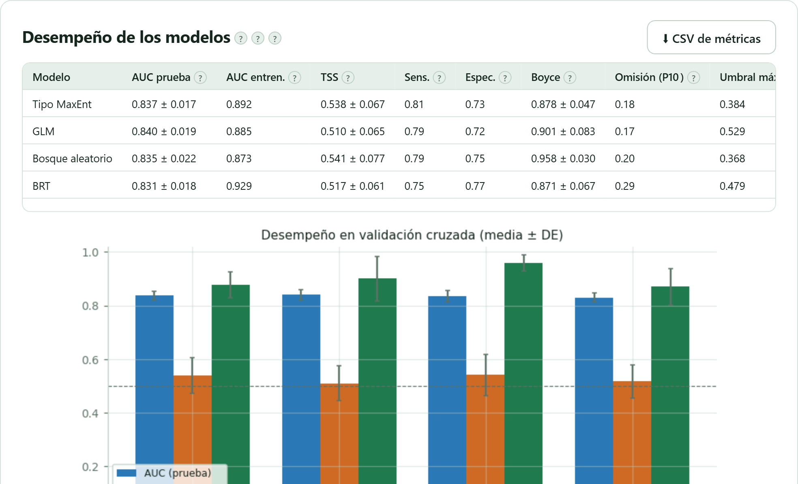
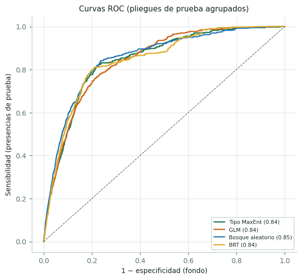
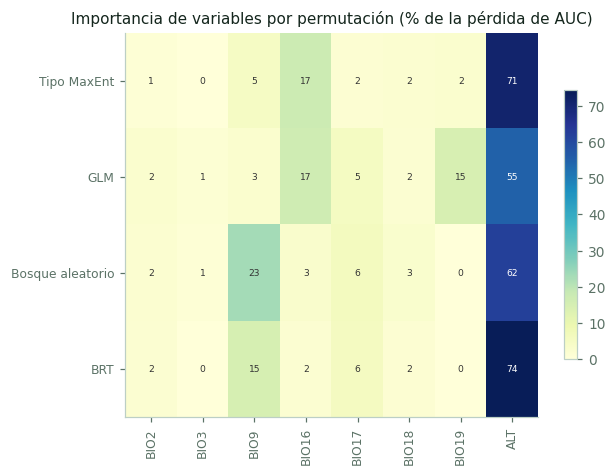
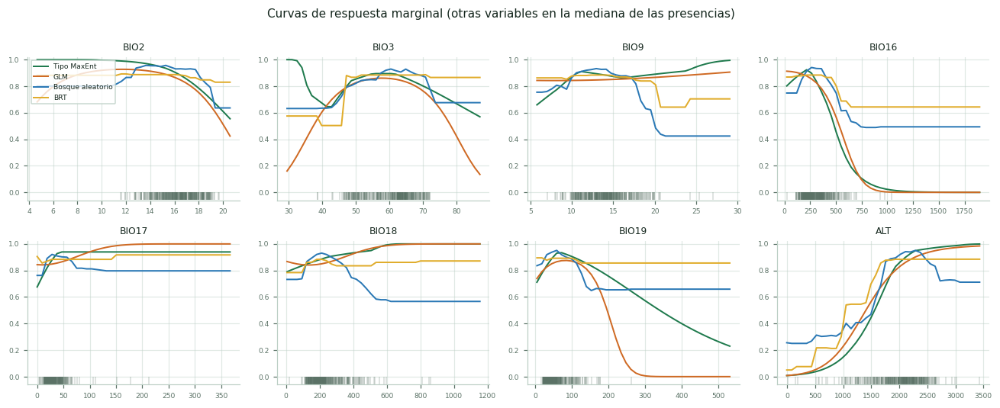
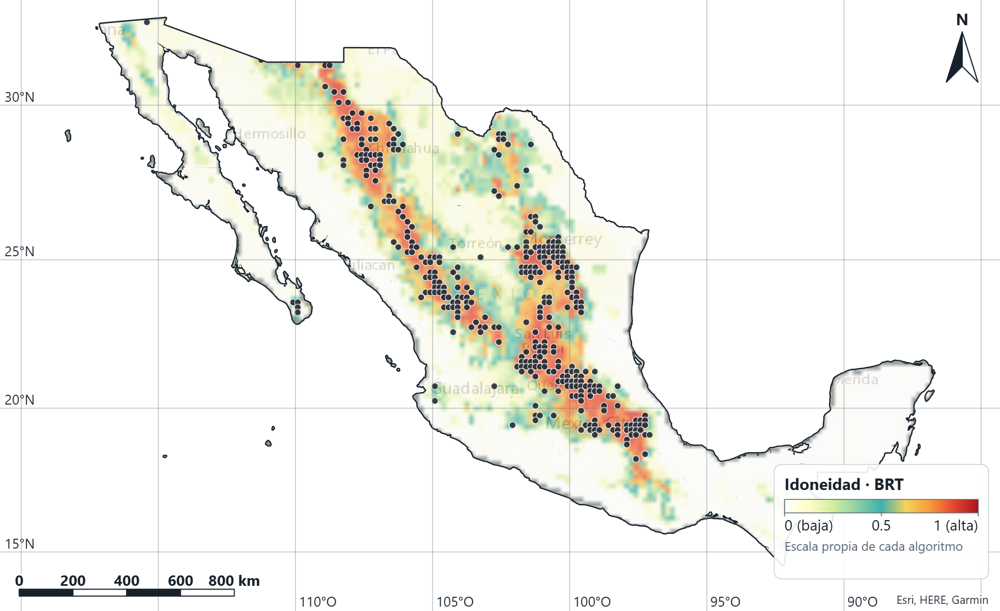

Diez algoritmos y un ensamble, validación por bloques espaciales, umbrales, importancia de variables, curvas de respuesta, mapas y proyección a escenarios de clima futuro con su mapa de extrapolación.
Un modelo de distribución aprende a distinguir el ambiente de los sitios donde la especie fue registrada del ambiente disponible en la región, y después aplica lo aprendido a cada celda del mapa. El resultado es una superficie continua de idoneidad: qué tan parecido es el clima de cada celda al de los sitios ocupados.
La palabra clave es disponible. Como no hay ausencias verdaderas (sección 1.1), el contraste se hace contra una muestra del ambiente de toda el área de estudio, los puntos de fondo. Por eso el área que se elige determina contra qué se compara la especie, y por eso el Bloque 2 importaba tanto.
El botón Preparar datos del modelo → hace cuatro cosas y las informa:
Con el piñonero y las capas de WorldClim a 10 arc-min: extensión País de los registros (MX), recuadro de −118.6° a −86.4° y de 14.4° a 32.8°, malla de 194 × 111 celdas de 18.6 km, 8 predictoras. De los 1,885 registros depurados, 14 quedan fuera de la extensión —los de Estados Unidos por encima del paralelo 32.8°— y de los 1,871 restantes, 1,468 caen en una celda ya ocupada o sin dato: quedan 403 presencias contra 7,751 puntos de fondo.
Que 1,871 registros se conviertan en 403 presencias asusta la primera vez. No se han perdido datos: se ha quitado la repetición. Con celdas de 18.6 km, 403 es el número de celdas distintas donde se ha registrado la especie, y eso es lo que el modelo puede aprender.
| Algoritmo | Qué hace y cuándo conviene |
|---|---|
| Tipo MaxEnt | Regresión logística penalizada (L1) sobre términos lineales, cuadráticos, de producto y bisagra, con salida cloglog. Es equivalente al modelado de máxima entropía y es el punto de partida razonable en casi cualquier estudio. |
| GLM | Modelo lineal generalizado con términos lineales y cuadráticos. Transparente, interpretable, y el más sensible a la colinealidad. |
| GAM | Aditivo generalizado con splines: curvas suaves sin imponer su forma. |
| Bosque aleatorio | Muchos árboles con submuestreo balanceado. Flexible y robusto; su validación usa predicciones fuera de bolsa para no inflar el ajuste. |
| Árboles potenciados (BRT) | Árboles añadidos uno a uno corrigiendo el error anterior. Muy preciso y el más propenso a sobreajustar. |
| Máquina de vectores de soporte | Frontera no lineal con núcleo radial. |
| Red neuronal | Cinco redes pequeñas promediadas. |
| Bioclim | Envolvente climática clásica: percentiles de cada variable. Sencillo y útil con muy pocas presencias. |
| Domain | Distancia de Gower al registro más parecido. |
| Mahalanobis | Distancia al centroide ambiental considerando la covarianza. |
Si se parten los registros al azar, los puntos de prueba quedan a pocos kilómetros de los de entrenamiento: el modelo los acierta porque están en el mismo cerro, no porque haya aprendido nada general. El resultado es un AUC alto y engañoso. La validación por bloques espaciales divide el área en bloques y deja fuera bloques enteros, así que el modelo debe predecir en zonas que no vio. Los valores bajan, y eso es lo correcto.
| Métrica | Qué mide y cómo se lee |
|---|---|
| AUC | Probabilidad de que un sitio de presencia reciba más idoneidad que uno de fondo tomado al azar. 0.5 es azar. Bandas de lectura habituales: 0.7–0.8 aceptable, 0.8–0.9 bueno, más de 0.9 excelente. Son convenciones, y con datos de solo presencia el AUC depende del área de estudio: no se comparan valores entre estudios distintos. |
| TSS | Sensibilidad + especificidad − 1, en el umbral que lo maximiza. De −1 a 1; por convención, arriba de 0.6 se considera bueno. Es más estable que el kappa y no depende de la prevalencia. |
| Índice de Boyce | Mide si las clases de idoneidad más altas contienen proporcionalmente más presencias: es la métrica pensada para datos de solo presencia. Va de −1 a 1; arriba de 0.8 indica un modelo muy consistente. |
| Omisión (P10) | Qué fracción de las presencias de prueba queda por debajo del umbral del percentil 10. Idealmente cercana a 0.1. |


Dos preguntas distintas: cuánto aporta cada variable y cómo responde la especie a ella.


Que BIO16 salga como la variable más importante no significa que la lluvia del trimestre húmedo cause la distribución: puede ser una variable que acompaña a la verdadera causa —la altitud, el tipo de suelo, la historia—. Y si dos variables están correlacionadas, el modelo reparte la importancia entre ellas de forma arbitraria; por eso el Bloque 6 va antes que este.
La app dibuja tres mapas por modelo: la idoneidad continua, la presencia/ausencia tras aplicar un umbral, y la incertidumbre entre modelos cuando hay varios.

| Umbral | Qué hace |
|---|---|
| Máximo TSS | El que maximiza sensibilidad + especificidad. Es el de uso más común y el que la app propone. |
| Percentil 10 (P10) | Deja fuera el 10 % de las presencias con menor idoneidad. Útil cuando se sospecha que hay registros mal georreferenciados. |
| Presencia mínima | Conserva todas las presencias. El más permisivo y el más sensible a un solo error. |
| Sensibilidad = especificidad | Equilibra los dos tipos de error. |
Con el umbral aplicado, la app calcula el área idónea en kilómetros cuadrados: en el ejemplo, el modelo tipo MaxEnt con umbral de máximo TSS (0.384) señala 471,566 km² de territorio mexicano con clima apto para el piñonero. Ese número cambia con el umbral, así que hay que reportar cuál se usó.
Cuando varios algoritmos coinciden, su promedio suele predecir mejor que cualquiera por separado, y su desacuerdo es una medida honesta de incertidumbre. El ensamble combina los modelos por media, mediana o comité de votos, y los pondera por AUC, TSS, Boyce o por igual. Junto al mapa promedio, la app dibuja el mapa de acuerdo: dónde los modelos dicen lo mismo y dónde no.
La última sección aplica el modelo ya ajustado a capas de clima futuro. Se añaden escenarios a una lista —cada uno con su modelo climático, su trayectoria y su periodo— y se proyectan todos de una vez.
| Qué entrega | Para qué sirve |
|---|---|
| Mapa por escenario | La idoneidad futura, con el mismo umbral que el presente. |
| Ganancia y pérdida | Cuánta área se gana, cuánta se pierde y cuánta se mantiene, en km² y en porcentaje. |
| Desplazamiento del área | Cuánto se mueve el centro de la distribución, en qué dirección y cuánto sube en altitud. |
| Supuestos de dispersión | Dispersión ilimitada, nula o limitada a una distancia: tres respuestas distintas a «¿podrá llegar?». |
| Refugios | Las zonas idóneas hoy y en todos los escenarios futuros: lo primero que hay que conservar. |
| Ensamble entre escenarios | Promedio y acuerdo entre modelos climáticos, que es donde está la mayor incertidumbre. |
El mapa MESS marca las celdas donde el clima futuro queda fuera del rango que el modelo vio al entrenarse. Ahí la predicción no es una estimación: es la fórmula extendida a ciegas. La app raya esas zonas en los mapas de futuro y permite exportar el MESS aparte. Sin esa capa, un mapa de idoneidad para 2070 promete una precisión que no tiene.
| Lo que ves | Qué pasó y qué hacer |
|---|---|
| El mapa no cubre todo el país | La malla se preparó con otra extensión. Cambia la extensión y vuelve a pulsar Preparar datos del modelo →: la app avisa cuando la malla preparada ya no coincide con la extensión elegida. |
| AUC de 0.99 | Sospecha antes de celebrar: suele venir de validación al azar en lugar de bloques, de un área de estudio enorme, o de presencias duplicadas. |
| Muy pocas presencias tras preparar, o un modelo que tarda demasiado | Lo primero es el adelgazado por celda: si te deja por debajo de quince presencias, usa capas de mayor resolución o amplía el área. Lo segundo es normal en el bosque aleatorio y los árboles potenciados, los más costosos: empieza con MaxEnt y GLM. |
| Hay zonas idóneas donde no hay registros | Puede ser una predicción interesante —hábitat no explorado— o extrapolación: míralo con el MESS y con lo que sepas de la especie. |
| El mapa de futuro es casi todo idóneo | Revisa que las capas futuras tengan la misma resolución y las mismas variables que las del presente, y mira el MESS. |